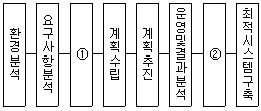
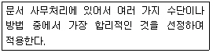
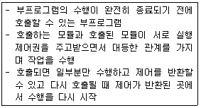

사무자동화산업기사 (2011-03-20 기출문제)
1과목: 사무자동화 시스템
1. SanDisk사, 마쯔시타전기, 도시바의 3개사가 공동 개발한 것으로 뮤직 온라인 배포에 적합한 저작권 보호기능을 내장하고 있는 것은?
- 보안 USB메모리
- 데이터종단장치
- SD메모리카드
- 플래시 메모리
(정답률: 75%)

2. 데이터베이스의 설명으로 틀린 것은?
- 파일 파손시 백업과 복구가 쉽다.
- 데이터의 중복을 최소화하여 기억 공간을 절약할 수 있다.
- 여러 사용자가 정보를 공유하므로 표준화하여 효율적인 자료관리가 가능하다.
- 다수의 사용자들이 서로 다른 목적으로 데이터를 공유하는 것이 가능하다.
(정답률: 50%)
3. 사무자동화의 궁극적인 목적은?
- 기술혁신
- 생산성 향상
- 정보통신 활용
- Computer의 대중화
(정답률: 78%)
4. 다음 그림은 사무자동화 추진단계를 나타낸 것이다. ①과 ②에 가장 적합한 것은?

- ① 목표설정, ② 시스템통합
- ① 목표설정, ② 오차수정
- ① 시스템설계, ② 장비도입
- ① 시스템설계, ② 시스템통합
(정답률: 75%)
5. 컴퓨터를 사용해 전화통화를 관리하는 것은?
- VoIP
- CTI
- 로밍
- 번호이동
(정답률: 68%)
6. 프로세서내의 레지스터와 파이프라인 회로를 사용하지 않는 시간을 유효하게 이용함으로서, 하나의 프로세서를 마치 2개의 프로세서인 것처럼 보이도록 하는 기술은?
- Hyper-Threading
- 멀티 프로세싱
- RISC
- 배열 프로세서
(정답률: 41%)
7. Windows 시스템 상에서 일본어, 중국어 등 문자수가 많은 언어로 입력하기 위해 필요한 소프트웨어는?
- OLE
- OCX
- IME
- UI
(정답률: 63%)
8. 어떤 디스크 팩이 7장으로 구성되어 있고 한 면당 200개의 트랙으로 구성되어 있을 때, 이 디스크 팩에서 사용 가능한 실린더의 수는?
- 7
- 200
- 400
- 1400
(정답률: 46%)
9. 소비자가 사업자의 신원 등에 관하여 쉽게 알 수 있도록 하기 위하여 전자상거래를 행하는 사이버몰의 운용자가 표시하여야 할 사항이 아닌 것은?
- 상호
- 사이버몰의 이용약관
- 취급품목
- 전자우편주소
(정답률: 77%)
10. 사무자동화 추진 전략에 포함되는 것은?
- 부서별 전략
- 차별화 전략
- 교육전략
- 조직구조변경 전략
(정답률: 32%)
11. 기업의 차세대 정보기술전략으로 프로세스 혁신, 6시그마 품질관리, ERP 등의 정보기술 솔루션을 경영에 활용하여 현재 기업의 경영 상태를 한 눈에 알 수 있게 만드는 것은?
- RTE
- EAI
- CRM
- CALS
(정답률: 42%)
12. EDI와 관련성이 가장 높은 기업 간 통신망의 형태는?
- VAN
- 실시간 거래
- 전자우편
- LAN
(정답률: 38%)
13. 데이터베이스 모델 중 네트워크 데이터베이스의 특징에 해당하는 것은?
- 레코드와 레코드를 연결하는 부자관계(parent-childrel ationship)인 링크로 구성된다.
- 하나의 자노드(child node)가 다수 개의 부노드(parent node)를 가질 수 있다.
- 세그먼트들이 모여서 데이터베이스를 형성한다.
- 표(table) 데이터베이스라고도 한다.
(정답률: 77%)
14. MPEG 표준 중 오디오 표준 분류를 위한 것은?
- MPEG-A
- MPEG-B
- MPEG-C
- MPEG-D
(정답률: 67%)
15. 파일전송과 직접적인 관련이 없는 것은?
- FTP
- HTTP
- SMTP
- SIP
(정답률: 45%)
16. 웹서버에서 쌍방향으로 통신하는 HTML 문서나 파일과 연동하고 출력하는 것은?
- 워드프로세서
- 웹 브라우저
- 프로토콜
- 오피스
(정답률: 75%)
17. 사무자동화의 목표에 관한 설명으로 틀린 것은?
- 비전문가라도 사용할 수 있는 시스템을 추구한다.
- 사무실의 무인화를 궁극적인 목표로 한다.
- 창조적 인간능력의 증대를 목표로 한다.
- 생산성 향상을 꾀하는 것이다.
(정답률: 83%)
18. 누산기(accumulator)에 대한 설명으로 옳은 것은?
- 연산의 결과를 일시적으로 기억하는 장치이다.
- 연산명령의 순서를 기억하는 장치이다.
- 연산부호를 해독하는 장치이다.
- 연산명령이 주어지면 연산할 준비를 하는 장치이다.
(정답률: 55%)
19. 자료전송기기로 적합하지 않은 것은?
- 팩시밀리
- 전자우편시스템
- 다기능전화기
- OCR
(정답률: 51%)
20. 사무자동화는 컴퓨터에 대한 전문 지식이 없는 사용자들이 편리하게 사용할 수 있는 분산자료 처리 시스템의 특별한 경우라고 말한 사람은?
- Zisman
- Hammer
- Ellis
- Marcus
(정답률: 69%)
2과목: 사무경영관리 개론
21. 사무 관리의 전문화라고 볼 수 없는 것은?
- 배타적 전문화
- 개인적 전문화
- 집단적 전문화
- 기계적 전문화
(정답률: 64%)
22. 저작권법상 전산정보처리시스템에 의하여 등록업무를 처리하는 경우 등록부로 보는 것은?
- 등록사항이 기록된 일반문서
- 등록사항이 기록된 전자문서
- 등록사항이 기록된 보조기억장치
- 등록사항이 기록된 주기억장치
(정답률: 58%)
23. 사무 통제에 대한 설명으로 적합하지 않은 것은?
- 효과적인 통제 방법은 감사, 예산, 집중화, 정책, 절차, 기록 등이 있다.
- 감사는 조사, 검사, 조회 혹은 평가 등을 말한다.
- 정보의 수집, 활동을 위한 준비, 행동의 각 단계의 유익한 지시의 연구 등이 행해진다.
- 예산은 그 자체가 통제성이 있는 것으로 작업 내용, 설비, 인사, 절차 등은 예산에 의해서 제약된다.
(정답률: 44%)
24. 사무와 관련된 설명으로 틀린 것은?
- 사무관리는 관리비용의 절감, 관리의 용이성을 증대시켜 경영의 생산성을 이루려 한다.
- 사무작업에는 기록, 계산, 통신, 회의, 분류, 정리 등의 작업이 포함된다.
- 집에서 가계부를 작성하는 것도 일종의 사무라 할 수 있다.
- 사무실은 사무원이 사무작업을 능률적으로 관리하도록 설치된 곳이다.
(정답률: 87%)
25. 중앙기록물관리기관의 장이 전자기록물 관리체계를 구축, 운영시 포함해야 할 사항이 아닌 것은?
- 전자기록물 관리시스템의 관리범위
- 전자기록물 관리시스템의 보존포맷
- 전자기록물 관리시스템의 규격
- 전자기록물 관리시스템의 관리항목
(정답률: 25%)
26. 사무계획 수립 절차에 속하지 않는 것은?
- 시정조치
- 정보의 수집
- 최종안의 선택
- 사무의 목적 및 목표의 명확화
(정답률: 43%)
27. 기업경영에 있어서 EDI를 통해 얻을 수 있는 전략적 효과가 아닌 것은?
- 다른 경영관리 시스템과의 통합
- 거래 상대방과의 관계 증진
- 경쟁력의 강화
- 인력의 효율적인 관리로 인건비 절약
(정답률: 72%)
28. 경매 또는 역경매를 통해서 판매자보다 소비자가 시장에서의 교섭력을 가지는 전자상거래는?
- B2B
- C2C
- B2C
- B2G
(정답률: 75%)
29. 사무실을 너무 세분화하는 것보다는 여러 과를 한 사무실에 배정하여 사용하는 것이 바람직하다고 생각하는 사무실의 배정방식은?
- 대사무실주의 배치
- 관련 부서의 인근 배치
- 업무처리 흐름에 따른 직선적 배치
- 실무자 중심의 사무실 배치
(정답률: 75%)
30. 사무관리 기능을 가장 잘 설명한 것은?
- 사무는 기업의 활동을 능률적으로 달성하기 위한관리 활동으로써, 각 기능들이 개별적으로 활동하게 해준다.
- 사무는 조직의 모든 부문 활동을 활발하게 움직이게 하는 상호결합 기능을 갖고 있다.
- 사무는 기업의 목표를 달성할 수 있도록 조언하고 지지하는 인적보조기능으로서, 경영규모가 커질수록 관리 기능은 더욱 축소된다.
- 사무는 정보를 필요로 하는 자에게 신속한 의사결정을 내릴 수 있도록 전달하는 개별적 서비스 기능이다.
(정답률: 54%)
31. 저작물 등의 원본 또는 그 복제물을 공중에게 대가를 받거나 받지 아니하고 양도 또는 대여하는 것을 의미하는 것은?
- 발행
- 배포
- 공표
- 양도
(정답률: 57%)
32. 사무관리 및 정보관리에 관한 설명으로 적합하지 못한 것은?
- 사무관리는 연결, 관리, 정보기능을 담당
- 정보관리는 의사결정자가 조직의 관리효율을 높일 수 있도록 정보를 신속 용이하게 제공
- 사무관리는 의사결정에 필요한 광범위한 정보를 대상으로 함
- 정보관리의 범위는 정보의 계획, 통제, 처리, 보관에 있음
(정답률: 44%)
33. 계획을 세우고 이를 달성하기 위하여 인간, 기계, 자료, 방법 등을 조정하는 모든 활동은?
- 조직
- 관리
- 행동
- 통제
(정답률: 51%)
34. 다음은 문서관리의 기본원칙 중 무엇에 관한 것인가?

- 간소화
- 전문화
- 자동화
- 표준화
(정답률: 85%)
35. 다음 중 전자문서의 수신으로 볼 수 있는 것은? (단, 수신자가 전자문서를 수신할 컴퓨터를 지정하지 아니한 경우임)
- 송신자의 컴퓨터에 입력되었을 때
- 수신자의 컴퓨터에 수신되었을 때
- 수신자가 관리하는 컴퓨터에 입력되었을 때
- 송신자의 컴퓨터 파일에 등록되었을 때
(정답률: 62%)
36. 개인정보의 안전성 확보에 필요한 기술적 조치가 아닌 것은?
- 개인정보에 대한 접근 권한을 확인하기 위한 식별
- 접속기록의 위조, 변조 방지를 위한 조치
- 개인정보보호를 위한 정기적인 자체 감사 실시
- 침해사고 방지를 위한 보안프로그램의 설치
(정답률: 48%)
37. 산업보건기준에 관한 규칙에 의거 ”적정 공기“의 최저 산소농도는?
- 10퍼센트
- 15퍼센트
- 18퍼센트
- 25퍼센트
(정답률: 43%)
38. 자료처리에서 시스템전문가를 통하지 않고 직접 컴퓨터를 이용하는 사무원, 관리자, 판매원 등이 사용하는 컴퓨터는?
- 중역정보 컴퓨터
- 사무자동화 컴퓨터
- 최종사용자 컴퓨터
- 집단의사결정지원 컴퓨터
(정답률: 56%)
39. 문서 보존시 변질원인인 충해의 방지를 위하여 행하는 일이 아닌 것은?
- 습도유지
- 온도유지
- 방범실시
- 소독실시
(정답률: 78%)
40. 직무에서 필요로 하는 3면 등가 원칙의 요소가 아닌 것은?
- 권한
- 권리
- 책임
- 의무
(정답률: 40%)
3과목: 프로그래밍 일반
41. 자료형 반환 중 widening에 해당하는 것은?
- 정수형을 실수형으로 변환
- 실수형을 정수형으로 변환
- 정수형을 문자형으로 변환
- 문자형을 실수형으로 변환
(정답률: 73%)
42. 기계어에 대한 설명으로 옳지 않은 것은?
- 컴퓨터가 이해하는 언어이다.
- 컴퓨터가 직접 이해할 수 있어 처리 속도가 빠르다.
- 0 또는 1로만 구성되어 있다.
- 상이한 기계에서 별다른 수정 없이 실행 가능하다.
(정답률: 87%)
43. C 언어에서 문자 데이터를 나타내는 자료형은?
- void
- char
- float
- int
(정답률: 55%)
44. 다음 설명과 가장 밀접한 관계가 있는 것은?

- 모니터
- 워킹 셋
- 코루틴
- 페이지
(정답률: 67%)
45. 주어진 BNF를 이용하여 고급언어로 작성된 프로그램을 구문 분석하여 문장을 문법구조에 따라 트리 형태로 작성한 것은?
- 메뉴(Menu) 트리
- 유도(Guide)트리
- 파스(Parse) 트리
- 덤프(Dump)트리
(정답률: 91%)
46. 프로그램 문서화의 목적으로 거리가 먼 것은?
- 프로그램 개발팀에서 운용팀으로 인계인수를 쉽게 할 수 있다.
- 사고발생 시 책임 구분을 명확히 할 수 있다.
- 프로그램 개발 중 추가 변경에 따른 혼란을 감소시킬 수 있다.
- 프로그램 개발 후 유지보수가 용이하다.
(정답률: 77%)
47. 프로그래밍 언어의 해독 순서로 옳은 것은?
- 링커 → 컴파일러 → 로더
- 컴파일러 → 링커 → 로더
- 로더 → 링커 → 컴파일러
- 컴파일러 → 로더 → 링커
(정답률: 87%)
48. 묵시적 순서제어의 의미로 가장 적합한 것은?
- 프로그램 언어에서 오류에 의한 순서가 바뀌는 것을 묵인하는 것을 의미한다.
- 프로그램 언어에서 변수를 사용하지 않고 순서를 제어함을 의미한다.
- 프로그램 언어에서 괄호나 연산자 등의 수식에 따른 순서 제어구조를 허용하지 않음을 의미한다.
- 프로그램 언어에서 미리 정해진 순서에 따라서 제어가 일어나는 것을 의미한다.
(정답률: 66%)
49. BNF 심볼에서 정의를 나타내는 기호는?
- I
- ∷=
- <>
- →
(정답률: 88%)
50. 기억장치의 한 장소를 추상화한 것으로 프로그램이 동작하는 동안 값이 수시로 변할 수 있는 것은?
- 상수
- 포인터
- 주석
- 변수
(정답률: 84%)
51. 프로세스의 정의로 적당하지 않은 것은?
- PCB를 가진 프로그램
- 동기적 행위를 일으키는 단위
- 프로세서가 할당되는 실체
- 실행 중인 프로그램
(정답률: 47%)
52. C언어의 이스케이프 시퀀스에서 "carriage return"을 나타내는 기호는?
- ＼t
- ＼n
- ＼b
- ＼r
(정답률: 85%)
53. 구조적 프로그램의 기본 구조가 아닌 것은?
- 순차구조
- 관계구조
- 선택구조
- 반복구조
(정답률: 39%)
54. C언어에서 사용되는 관계 연산자 중 “A와 B가 같지 않다.”의 의미를 갖는 것은?
- A<>B
- A!=B
- A<=B
- A&=B
(정답률: 85%)
55. 구역성(locality)에 대한 설명으로 옳지 않은 것은?
- 스래싱을 방지하기 위한 워킹 셋 이론의 기반이 되었다.
- Denning 교수에 의해 구역성의 개념이 증명되었다.
- 프로세스가 실행되는 동안 주기억장치를 참조할 때 일부 페이지만 집중적으로 참조하는 성질을 의미한다.
- 공간 구역성이 이루어지는 기억장소는 Loop, Stack, Sub Routine 에 사용되는 변수 등이다.
(정답률: 34%)
56. C 언어의 기억 클래스 종류가 아닌 것은?
- 자동(Automatic) 변수
- 동적(Dynamic) 변수
- 레지스터(Register) 변수
- 외부(External) 변수
(정답률: 44%)
57. 수식 “A+(B*C)"를 Postfix 표기법으로 옳게 나타낸 것은?
- A B C + *
- + A * B C
- A + B * C
- A B C * +
(정답률: 75%)
58. 운영체제의 목적으로 옳지 않은 것은?
- 사용 가능도 향상
- 응답 시간 증가
- 데이터 공유 및 주변장치 관리
- 사용자와 컴퓨터 간의 인터페이스 제공
(정답률: 53%)
59. 프로그래밍 언어에서 사용되는 예약어(Reserved Word)에 대한 설명으로 옳지 않은 것은?
- 번역 과정에서의 성능 향상을 도모할 수 있다.
- 프로그램의 판독성을 증가시킨다.
- 이식성이 높은 C 언어는 예약어가 없다.
- 프로그래머가 예약어와 동일한 변수명을 사용할 수 없다.
(정답률: 56%)
60. 단항 연산자 연산에 해당하지 않는 것은?
- move
- rotate
- and
- shift
(정답률: 48%)
4과목: 정보통신 개론
61. 다음 중 계층화 구조의 기본 구성 요소에 해당되지 않는 것은?
- 개체(Entity)
- 데이터 단위(Data Unit)
- 접속(Connection)
- 주소(Address)
(정답률: 34%)
62. 멀티미디어 표준화방식에서 동화상 압출 표준화에 해당되는 것은?
- JPEG
- MPEG
- MP3
- HTTP
(정답률: 54%)
63. 비패킷형 단말이 패킷교환망을 이용할 수 있도록 패킷을 조립, 분해하는 기능을 가진 장치는?
- DSU
- MODEM
- PAD
- CCU
(정답률: 67%)
64. 다음 중 비동기식 전송시 포함되는 내용이 아닌 것은?
- 시작 비트
- 데이터
- 플래그 비트
- 정지 비트
(정답률: 56%)
65. 다음 중 광통신 시스템에서 광 검출기로 적합한 것은?
- LD(Laser Diode)
- LED(Light Emitting Diode)
- ZD(Zener Diode)
- APD(Avalanche Photo Diode)
(정답률: 50%)
66. 다음 중 전송 오류 검출 방식이 아닌 것은?
- 패리티(parity) 검사
- 블록합검사(block sum check)
- 순환잉여검사(CRC)
- 바이폴라(bipolar) 검사
(정답률: 79%)
67. 다음 중 패킷 교환방식의 장점이 아닌 것은?
- 송ㆍ수신 간에 이용되는 단말기의 속도나 프로토콜이 서로 상이하여도 통신이 가능하다.
- 전송데이터의 패킷에는 목적지의 주소, 제어정보 등의 추가로 인한 오버헤드가 존재한다.
- 디지털전송에 이용되기 때문에 전송품질과 신뢰도가 우수하다.
- 중계회선을 서로 다른 이용자가 공동으로 사용할 수 있어 회선 사용률이 좋다.
(정답률: 30%)
68. OSI-7 참조모델 계층 중 종점간(End-to-End)에 신뢰성 있는 데이터 전송을 제공하고, 다중화의 기능을 수행하는 계층은?
- 데이터링크 계층(Data link Layer)
- 네트워크 계층(Network Layer)
- 트랜스포트 계층(Transport Layer)
- 세션 계층(Session Layer)
(정답률: 37%)
69. 8위상변조와 2진폭변조를 혼합하여 변조속도가 1200[baud]인 경우 전송속도[bps]는?(오류 신고가 접수된 문제입니다. 반드시 정답과 해설을 확인하시기 바랍니다.)
- 1200
- 2400
- 3600
- 4800
(정답률: 65%)
70. 아날로그컬러 TV방송방식에 대한 국제표준규격이 아닌 것은?
- SCAN
- NTSC
- PAL
- ATSC
(정답률: 53%)
71. 다음 중 데이터링크 계층에서 손상된 프레임의 재전송을 요구하는 자동반복 요청의 기능은?
- 흐름제어
- 전송에어제어
- 링크제어
- 회선제어
(정답률: 27%)
72. OSI-7 참조모델 계층에서 제4~6계층의 순서가 차례대로 옳은 것은?
- 트랜스포트계층 → 세션계층 → 프레젠테이션계층
- 세션계층 → 네트워크계층 → 응용계층
- 네트워크계층 → 트랜스포트계층 → 세션계층
- 프레젠테이션계층 → 응용계층 → 세션계층
(정답률: 67%)
73. 다음 중 베이스밴드 LAN에 대한 설명으로 옳은 것은?
- 높은 반송파를 통해서 데이터, 영상, 음성 등의 전송이 이루어진다.
- 디지털 신호정보를 직접 전송하는 방식이다.
- 통신경로를 여러 개의 주파수대역으로 나누어 쓰는 방식이다.
- 기본적으로 주파수 분할 다중화방식을 이용한다.
(정답률: 25%)
74. 다중화 방식 중 실제로 전송할 데이터가 있는 단말장치에만 타임 슬롯을 할당함으로써 전송 효율을 높일 수 있는 것은?
- 동기식 TDM
- FDM
- 비동기식 TDM
- CDM
(정답률: 65%)
75. 다음 중 위성 통신의 다원접속 방법이 아닌 것은?
- 신호분할 다원접속
- 주파수분할 다원접속
- 시분할 다원접속
- 코드분할 다원접속
(정답률: 27%)
76. 다음 중 OSI-7 참조모델의 네트워크 계층까지의 기능을 수행하는 것은?
- 아답터
- 브리지
- 라우터
- 리피터
(정답률: 60%)
77. 다음 중 주파수분할 다중화(FDM)에 대한 설명으로 옳은 것은?
- 채널간의 완충지역으로 가드밴드가 있어 채널의 증가 효과가 있다.
- 대역확산방식을 이용한 다중화 방식이다.
- 각 채널에 고정된 time slot을 할당하는 방식이다.
- TV방송이나 CATV 등에 사용되며, 전송로의 대역폭을 여러 개의 작은 대역으로 나누어 쓰는 기법이다.
(정답률: 59%)
78. 반송파로 사용되는 정현파의 위상에 정보를 실어 보내는 변조방식은?
- ASK
- DM
- PSK
- ADPCM
(정답률: 42%)
79. 원거리에서 전기나 수도, 가스 등의 사용량을 원격 검침하는 시스템은?
- TMS(Tele-Metering System)
- ARS(Automatic Response System)
- CTS(Computerized Typesetting System)
- POS(Point of sales System)
(정답률: 40%)
80. 통신회선의 채널용량을 증가시키기 위한 방법으로 적합하지 않은 것은?
- 신호 세력을 높인다.
- 잡음 세력을 줄인다.
- 데이터 오류를 줄인다.
- 채널대역폭을 증가시킨다.
(정답률: 37%)